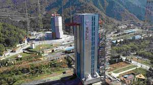
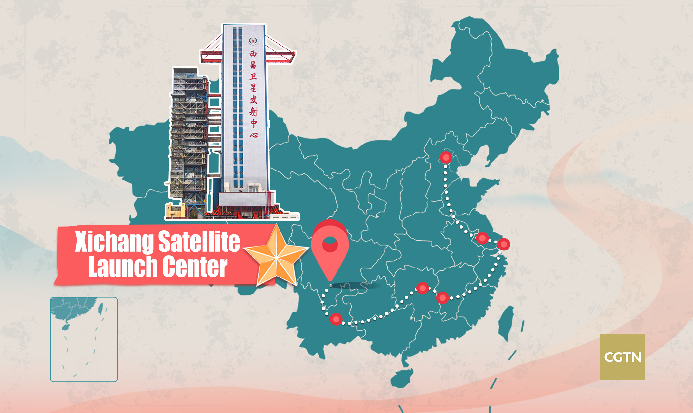
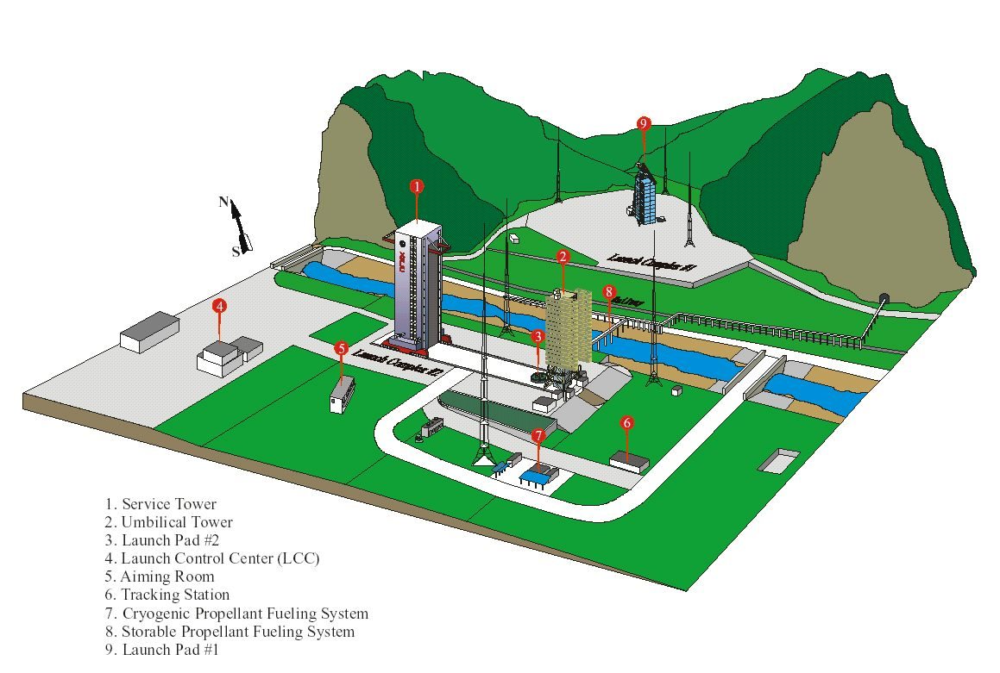
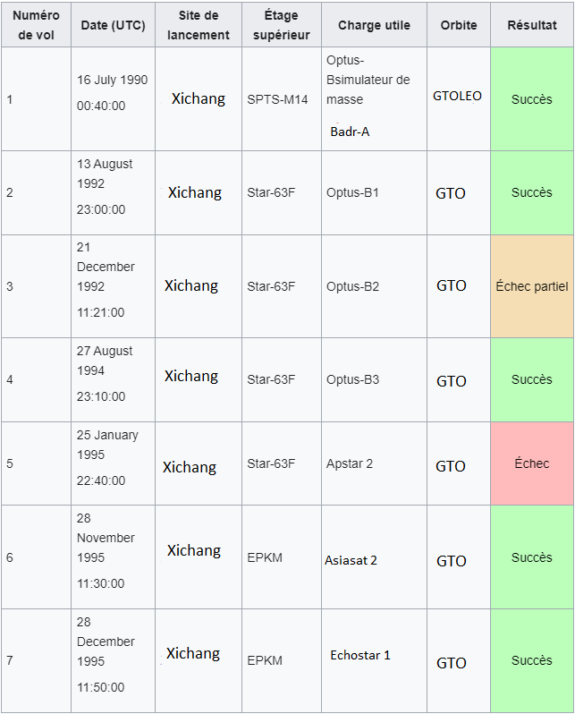
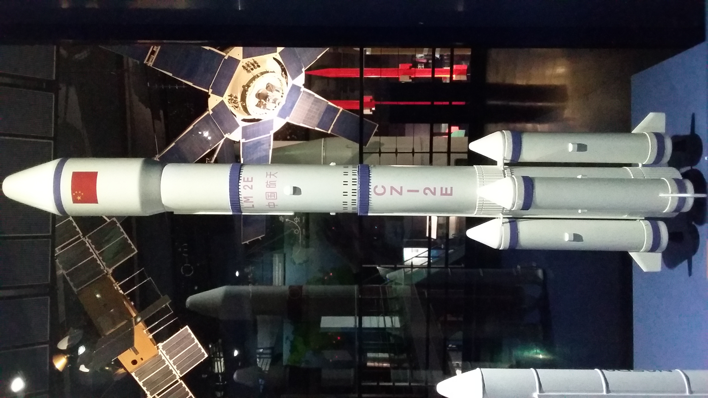

Xichang Space Center (Chine)

Le Xichang Space Center est un centre spatial chinois spécialisé dans le lancement de
satellites sur des orbites hautes, notamment la convoitée orbite de transfert géostationnaire
dédiée aux télécommunications entre autres.
Le centre spatial est localisé dans la province de Sichuan au sud-ouest de la Chine et son
siège central se trouve dans la ville de Xichang, à 65 km de la base de lancement. La base est
située dans une région montagneuse, ce qui est avantageux pour les lancements spatiaux,
car les montagnes fournissent une protection naturelle contre les vents forts et les
intempéries.
Histoire de la base :

Dans les années 1960, la Chine envisage la construction d'une nouvelle base de lancement
dans le sud en raison des tensions avec l'Union soviétique. Choisi en 1970, le site de Songlin
près de Xichang est retenu. Initialement destiné au vaisseau habité Shouguang, le complexe
no 1 est abandonné en 1978. La base se concentre ensuite sur le lancement de satellites de
télécommunications DFH-2 en orbite géostationnaire.
Son plus gros échec a lieu le 15 février 1996, le vol inaugural du lanceur emportant le satellite
de télécommunications américain Intelsat 708 quitte sa trajectoire nominale immédiatement
après le décollage et vient s'écraser sur une colline à 1 200 mètres du pas de tir en détruisant
80 bâtiments et en tuant, selon les déclarations officielles, 6 personnes et en blessant 57
Caractéristiques et installations de la base :

La situation géographique de la base permet néanmoins d’assurer une logistique efficace. Le
centre spatial est desservi par l’aéroport de Xichang à 65 km de là. La piste aéroportuaire
s'étend sur 3 600 m et est capable d'accepter l'atterrissage de gros porteurs comme le
Lockheed C-130, l'Antonov 124 ou encore le Boeing 747. A l’aérodrome passent les lignes de
chemin de fer Chengdu-Kunming et Sichuan-Yunnan relient le centre spatial.
Au centre spatial, une voie simple et une voie large relient le centre technique au complexe
de lancement ainsi qu'une route de 8 m de large. Le centre spatial de Xichang possède des
infrastructures logistiques (pour les satellites et les lanceurs), deux rampes de lancement
pour les fusées Chang-Zheng ainsi qu'un complexe hôtelier pour accueillir les clients détachés
pour les campagnes de lancement.
Liste de Lancement ( Longue Marche 2E)
 